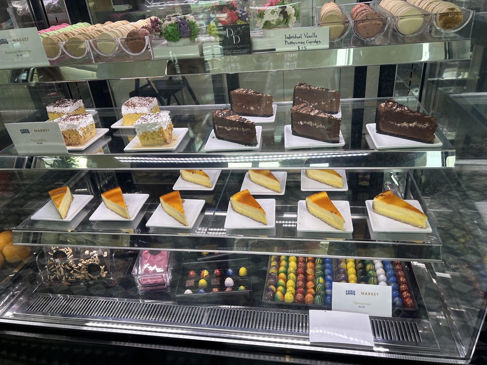

Brunch
Open for brunch, with French toast, pancakes and a ginger mocktail.
Cassis · Gulfport
Cassis Restaurant St. Pete serves Gulfport from St. Petersburg.
Coming from Gulfport? Cassis Restaurant St. Pete is in St. Petersburg, on Beach Drive NE. Brunch, lunch, dinner, pizza and a late night bar.
Brunch, lunch, dinner
Open for brunch, lunch and dinner.
Open for brunch, with French toast, pancakes and a ginger mocktail.

Classic dishes with subtle Mediterranean influences.

Sandwiches, pizza, salads, pastries and breads, plus a full coffee bar, all to go.
4.4 ★ · 3693 Google reviews
First time coming here while visiting St. Pete’s! This place was recommended by local friends as one of their favorites and I can see why! They offer a large menu selection with a wide range of different options. Our party had vegetarian, vegan and picky eaters and they were able to accommodate all of us easily! The views were stunning as well.
Excellent breakfast here. It was a rainy Saturday morning. Get a ginger mocktail and the French toast. My friend got the bananas foster pancakes and a side of bacon Great food quality and great service Feels like A NYC or European breakfast place
Sebastian always makes our experience at Cassis even better. I’ve been coming here for a while, and his kindness, attentiveness, and genuine hospitality never go unnoticed. He remembers the little things, makes us feel welcome, and somehow manages to stay calm and friendly even when the restaurant is busy. Great service can turn a good meal into a memorable one, and Sebastian consistently does just that.